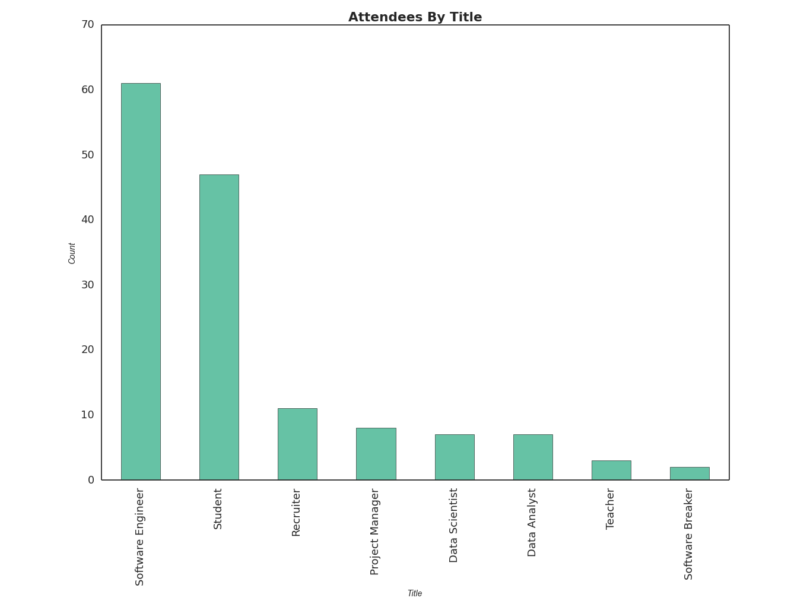

In late January PyLadies Chicago hosted a viewing of "CODE: Debugging the Gender Gap" followed by a Q&A panel at Dev Bootcamp. We first heard about CODE through Systers, the Anita Borg Institute listserv; their response was overwhelmingly positive. Although PyLadies typically works in Python, we are first and foremost a community for Chicago women. Hence we felt it was important to bring CODE to the Chicago tech community.
The chart below represents the job titles of our attendees. A majority of participants self-identified as software engineers. The next highest category self-identified as student. With a projected 50-60% gap between data science supply and demand in the US by 2018, it was exciting to see that approximately 10% of the audience came from this background. The event was open to anyone, regardless of gender. We did, however, market the event specifically to diversity focused tech groups.

Why is this important?
Given the diversity of our audience we chose coders (or those that work with coders) from across the spectrum. Our five panelists included:
-
Coraline Ada Ehmke, Principal Developer, Healthfinch and Founding Member of OS4W.org and Contributor-Covenant
-
Michelle Fowler, Managing Director of Development, Neurensic
-
Dalal Alrayes, Giftr Co-Founder and Write/Speak/Code Chicago Organizer
-
Dr. Aaron Zerhusen*, Professor of Mathematics, Dominican University
-
Alex Burst, Community Manager, Girls Who Code Chicago
Note: Dr. Zerhusen, the only man on the panel, previously reached out to PyLadies to discuss if his participation in PyLadies events would be permissible. His willingness to meet PyLadies on our own terms in accordance with our Code of Conduct is a major reason why he was invited to participate in the panel.
In general the panel felt that CODE offers a brief survey of factors leading to gender disparity in the coding community, most notably emphasizing pipeline. While the retention of women in coding was touched upon it was, ironically, not as heavily discussed. All the panelists agreed that how these factors impact women coders varies greatly depending on circumstances like age or title.
"Coders should be everybody … it can do everything." - Featured CODE interviewee Danielle Feinberg, Director of Photography, Pixar
Panel Question: How have you experienced the gender gap in your particular space in software or computing?
Unsurprisingly all of the panelists acknowledged the physical absence of women to be the primary way they understand the gender gap. In fact Michelle Fowler, a developer for over 14 years, mentioned it was not until recently that she began to work with women developers.
"Women have always been an equal part of the past. We just haven't been a part of history." - Gloria Steinem
To explain the absence of women from coding CODE interviewed author Walter Isaacson, author of Steve Jobs, about his latest publication The Innovators: How a Group of Inventors, Hackers, Geniuses, and Geeks Created the Digital Revolution. One point Isaacson emphasized over and over relates to how women’s contributions are preserved in the written record. Women have systematically been written out of history or their contributions have been diminished. Consider that in the 1930s women were sought out to instruct the computer, rather than building it, because the belief was that the instruction was easy whereas the building was hard. However, once programming was identified as satisfying and well paid work, job opportunities were increasingly marketed to men. Additionally, personal computers in the 1980s were marketed almost exclusively to boys. This led to a skills gap for incoming computer science majors in the coming decades, further widening the gender gap. Over time early women programmers (like Grace Hopper or Jean Jennings) were excluded from programming history going so far as to not even name them at public events discussing the computer.
If the computer revolution has by default meant the exclusion of women then the physical erasure of women from coding does not seem so improbable.
Panel Question: The "celebration of nerd culture [as] a way to signal your abilities" was mentioned in the film when defining what it meant to be a “hacker”. What is your thought of this and how that has manifested itself in the public image of a “coder”?
Many of the panelists agreed that this image has been difficult to confront. If being a coder is associated with being a hacker, that’s not a socially acceptable identity for a woman. Hackers are seen as aggressive, intelligent, antisocial men. To show off your skills you forcefully penetrate systems you don’t have access to. Even more problematic is the emergence of the "brogrammer", an overtly masculine identity, that has been used to try attract more [men] to programming. Common cultural signifiers in job postings, like mentions of kegs, ping pong, or bacon can act as flags that an environment is designed for “brogrammers” and might not be hospitable to women.
Panel Question: One thing that's sometimes listed as a difference between women who leave the tech industry and those who stay is "attitudes toward failure". Could you describe what you think your attitude toward failure is, maybe with an example of a time you've "failed"?
Many of the women on the panel described their attitude towards failure to be a complicated one. Understanding that you can fail is the first step but knowing that you can learn from that failure is the second step. Dr. Zerhusen commented that he overwhelmingly saw that women students take failure harder when compared to the men counterparts. Michelle Fowler also noted that owning up to failure in the workplace can lead coworkers to believe you’re lacking. If everyone else in the office is quick to pass the blame, it’s easy to fall victim to stereotype threat and be viewed as less competent by your peers. However, when you don’t own up to your failures, it can lead to skill stagnation or atrophy, making it even harder to advance in the field.
So if we know that women have been written out of history as coders, the identity of a coder isn’t associated with being a woman, and that women have a different attitude towards failure than men what can we do? The biggest takeaway from the panel and audience discussion felt that community is fundamental for retaining women in the field. Pipeline is one problem, but retention is arguably an even bigger one.
Chi Ladies Hackathon, a collective women in tech community event
On April 2nd, 2016 many of the organizers from Chicago women in tech groups are banding together to organize the first Chi Ladies Hackathon. Organizing within our respective communities will continue of course but we are working to have as broad a community as possible. We hope that with events like this (that offer childcare too!) we can continue to promote a safe space for women in more meaningful ways. Accessibility should never be an issue and this is a first collective effort on our part to address that.